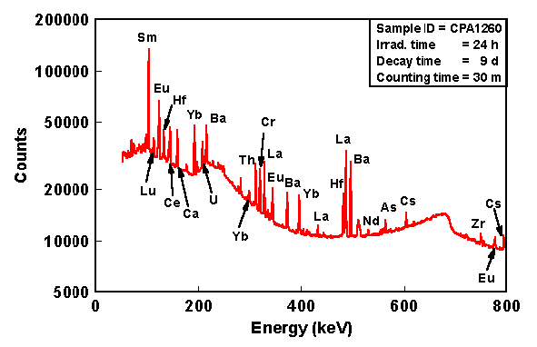
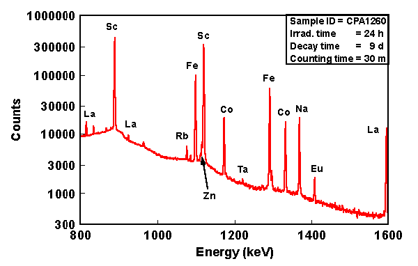

The application of neutron activation analysis (NAA) to investigate archaeological problems began in the mid-1950s, when scientists at Brookhaven National Laboratory (Sayre and Dodson 1957) recognized its potential for relating artifacts to source materials through their chemical signatures. The advantages of NAA over other analytical techniques were quickly recognized, including: (1) ease of sample preparation; (2) high precision; (3) simultaneous measurement of multiple elements; (4) outstanding replicability; and (5) excellent inter-laboratory comparability. Interest in NAA expanded throughout the 1960s, 1970s, and 1980s as a result of an increased curiosity in archaeological questions by physical scientists (e.g., Perlman and Asaro 1969; Harbottle 1976, 1982) and direct involvement of archaeologists (e.g., Bieber et al. 1976; Bishop 1975) in the application of nuclear analytical procedures.
Neutron Activation Analysis (NAA) is a sensitive analytical technique useful for performing both qualitative and quantitative multi-element analysis of major, minor, and trace elements in samples from almost every conceivable field of scientific or technical interest. For many elements and applications, NAA offers sensitivities that are superior to those attainable by other methods, on the order of parts per billion or better. In addition, because of its accuracy and reliability, NAA is generally recognized as the "referee method" of choice when new procedures are being developed or when other methods yield results that do not agree. Worldwide application of NAA is so widespread it is estimated that approximately 100,000 samples undergo analysis each year. (For more information about all analytical services at MURR)
Neutron activation analysis was discovered in 1936 when Hevesy and Levi found that samples containing certain rare earth elements became highly radioactive after exposure to a source of neutrons. From this observation, they quickly recognized the potential of employing nuclear reactions on samples followed by measurement of the induced radioactivity to facilitate both qualitative and quantitative identification of the elements present in the samples.
The basic essentials required to carry out an analysis of samples by NAA are a source of neutrons, instrumentation suitable for detecting gamma rays, and a detailed knowledge of the reactions that occur when neutrons interact with target nuclei. Brief descriptions of the NAA method, reactor neutron sources, and gamma-ray detection are given below
The sequence of events occurring during the most common type of nuclear reaction used for NAA, namely the neutron capture or (n,gamma) reaction, is illustrated in Figure 1. When a neutron interacts with the target nucleus via a non-elastic collision, a compound nucleus forms in an excited state. The excitation energy of the compound nucleus is due to the binding energy of the neutron with the nucleus. The compound nucleus will almost instantaneously de-excite into a more stable configuration through emission of one or more characteristic prompt gamma rays. In many cases, this new configuration yields a radioactive nucleus which also de-excites (or decays) by emission of one or more characteristic delayed gamma rays, but at a much slower rate according to the unique half-life of the radioactive nucleus. Depending upon the particular radioactive species, half-lives can range from fractions of a second to several years.
Figure 1: Diagram illustrating the process of neutron capture by a target nucleus followed by the emission of gamma rays
In principle, therefore, with respect to the time of measurement, NAA falls into two categories: (1) prompt gamma-ray neutron activation analysis (PGNAA), where measurements take place during irradiation, or (2) delayed gamma-ray neutron activation analysis (DGNAA), where the measurements follow radioactive decay. The latter operational mode is more common; thus, when one mentions NAA it is generally assumed that measurement of the delayed gamma rays is intended. About 70% of the elements have properties suitable for measurement by NAA.
Although there are several types of neutron sources (reactors, accelerators, and radioisotopic neutron emitters) one can use for NAA, nuclear reactors with their high fluxes of neutrons from uranium fission offer the highest available sensitivities for most elements. Different types of reactors and different positions within a reactor can vary considerably with regard to their neutron energy distributions and fluxes due to the materials used to moderate (or reduce the energies of) the primary fission neutrons. However, as shown in Figure 2, most neutron energy distributions are quite broad and consist of three principal components (thermal, epithermal, and fast).
Figure 2: A typical reactor neutron energy spectrum showing the various components used to describe the neutron energy regions.
The thermal neutron component consists of low-energy neutrons (energies below 0.5 eV) in thermal equilibrium with atoms in the reactor's moderator. At room temperature, the energy spectrum of thermal neutrons is best described by a Maxwell-Boltzmann distribution with a mean energy of 0.025 eV and a most probable velocity of 2200 m/s. In most reactor irradiation positions, 90-95% of the neutrons that bombard a sample are thermal neutrons. In general, a one-megawatt reactor has a peak thermal neutron flux of approximately 1E13 neutrons per square centimeter per second.
The epithermal neutron component consists of neutrons (energies from 0.5 eV to about 0.5 MeV) which have been only partially moderated. A cadmium foil 1 mm thick absorbs all thermal neutrons but will allow epithermal and fast neutrons above 0.5 eV in energy to pass through. In a typical unshielded reactor irradiation position, the epithermal neutron flux represents about 2% the total neutron flux. Both thermal and epithermal neutrons induce (n,gamma) reactions on target nuclei. An NAA technique that employs only epithermal neutrons to induce (n,gamma) reactions by irradiating the samples being analyzed inside either cadmium or boron shields is called epithermal neutron activation analysis (ENAA).
The fast neutron component of the neutron spectrum (energies above 0.5 MeV) consists of the primary fission neutrons which still have much of their original energy following fission. Fast neutrons contribute very little to the (n,gamma) reaction, but instead induce nuclear reactions where the ejection of one or more nuclear particles - (n,p), (n,n'), and (n,2n) - are prevalent. In a typical reactor irradiation position, about 5% of the total flux consists of fast neutrons. An NAA technique that employs nuclear reactions induced by fast neutrons is called fast neutron activation analysis (FNAA).
As mentioned earlier, the NAA technique can be categorized according to whether gamma rays are measured during neutron irradiation (PGNAA) or at some time after the end of the irradiation (DGNAA). The PGNAA technique is generally performed by using a beam of neutrons extracted through a reactor beam port. Fluxes on samples irradiated in beams are on the order of one million times lower than on samples inside a reactor but detectors can be placed very close to the sample compensating for much of the loss in sensitivity due to flux. The PGNAA technique is most applicable to elements with extremely high neutron capture cross-sections (B, Cd, Sm, and Gd); elements which decay too rapidly to be measured by DGNAA; elements that produce only stable isotopes; or elements with weak decay gamma-ray intensities.
DGNAA (sometimes called conventional NAA) is useful for the vast majority of elements that produce radioactive nuclides. The technique is flexible with respect to time such that the sensitivity for a long-lived radionuclide that suffers from an interference by a shorter-lived radionuclide can be improved by waiting for the short-lived radionuclide to decay. This selectivity is a key advantage of DGNAA over other analytical methods.
With the use of automated sample handling, gamma-ray measurement with solid-state detectors, and computerized data processing it is generally possible to simultaneously measure more than thirty elements in most sample types without chemical processing. The application of purely instrumental procedures is commonly called instrumental neutron activation analysis (INAA) and is one of NAA's most important advantages over other analytical techniques. If chemical separations are done to samples after irradiation to remove interferences or to concentrate the radioisotope of interest, the technique is called radiochemical neutron activation analysis (RNAA). The latter technique is performed infrequently due to its high labor cost.
The instrumentation used to measure gamma rays from radioactive samples generally consists of a semiconductor detector, associated electronics, and a computer-based, multi-channel analyzer (MCA/computer). Most NAA labs operate one or more hyperpure or intrinsic germanium (HPGe) detectors which operate at liquid nitrogen temperatures (77 degrees K) by mounting the germanium crystal in a vacuum cryostat, thermally connected to a copper rod or "cold finger". Although HPGe detectors come in many different designs and sizes, the most common type of detector is the coaxial detector which in NAA is useful for measurement of gamma-rays with energies over the range from about 60 keV to 3.0 MeV.
The two most important performance characteristics requiring consideration when purchasing a new HPGe detector are resolution and efficiency. Other characteristics to consider are peak shape, peak-to-Compton ratio, crystal dimensions or shape, and price.
The detector's resolution is a measure of its ability to separate closely spaced peaks in a spectrum. In general, detector resolution is specified in terms of the full width at half maximum (FWHM) of the 122-keV photopeak of Co-57 and the 1332-keV photopeak of Co-60. For most NAA applications, a detector with 1.0-keV resolution or below at 122 keV and 1.8 keV or below at 1332 keV is sufficient.
Detector efficiency depends on the energy of the measured radiation, the solid angle between sample and detector crystal, and the active volume of the crystal. A larger volume detector will have a higher efficiency. In general, detector efficiency is measured relative to a 3-inch by 3-inch sodium iodide detector using a Co-60 source (1332-keV gamma ray) at a distance of 25 cm from the crystal face. A general rule of thumb for germanium detectors is 1 percent efficiency per each 5 cc of active volume. As detector volume increases, the detector resolution gradually decreases. For most NAA applications, an HPGe detector of 15-30 percent efficiency is adequate.
Typical gamma-ray spectra from an irradiated pottery specimen are shown in Figures 3–5 using two different irradiation and measurement procedures.
The procedure generally used to calculate concentration (i.e., ppm of element) in the unknown sample is to irradiate the unknown sample and a comparator standard containing a known amount of the element of interest together in the reactor. If the unknown sample and the comparator standard are both measured on the same detector, then one needs to correct the difference in decay between the two. One usually decay corrects the measured counts (or activity) for both samples back to the end of irradiation using the half-life of the measured isotope. The equation used to calculate the mass of an element in the unknown sample relative to the comparator standard is:
where A=activity of sample (sam) and standard (std), m=mass of the element, λ=decay constant for the isotope, and Td=decay time. When performing short irradiations, the irradiation, decay and counting times are normally fixed the same for all samples and standards such that the time-dependent factors cancel. Thus the above equation simplifies into:
where c=concentration of the element and W=weight of the sample and standard.
The sensitivities for NAA are dependent upon the irradiation parameters (i.e., neutron flux, irradiation and decay times), measurement conditions (i.e., measurement time, detector efficiency), nuclear parameters of the elements being measured (i.e., isotope abundance, neutron cross-section, half-life, and gamma-ray abundance). The accuracy of an individual NAA determination usually ranges between 1 to 10 percent of the reported value. Table 1 lists the approximate sensitivities for determination of elements assuming interference free spectra.
Figure 3: Gamma-ray spectrum showing several short-lived elements measured in a sample of pottery irradiated for 5 seconds, decayed for 25 minutes, and counted for 12 minutes with an HPGe detector.
Figure 4: Gamma-ray spectrum from 0 to 800 keV showing medium- and long-lived elements measured in a sample of pottery irradiated for 24 hours, decayed for 9 days, and counted for 30 minutes on a HPGe detector.
Figure 5: Gamma-ray spectrum from 800 to 1600 keV showing medium- and long-lived elements measured in a sample of pottery irradiated for 24 hours, decayed for 9 days, and counted for 30 minutes on a HPGe dectector.
Table 1. Estimated Detection limits for INAA using decay gamma rays. Assuming irradiation in a reactor neutron flux of 1x1013n cm-2 s-1.
| Sensitivity (picograms) | Elements |
|---|---|
| 1 | Dy, Eu |
| 1-10 | In, Lu, Mn |
| 10-100 | Au, Ho, Ir, Re, Sm, W |
| 100–1E3 | Ag, Ar, As, Br, Cl, Co, Cs, Cu, Er, Ga, Hf, I, La, Sb, Sc, Se, Ta, Tb, Th, Tm, U, V, Yb |
| 1E3–1E4 | Al, Ba, Cd, Ce, Cr, Hg, Kr, Gd, Ge, Mo, Na, Nd, Ni, Os, Pd, Rb, Rh, Ru, Sr, Te, Zn, Zr |
| 1E4–1E5 | Bi, Ca, K, Mg, P, Pt, Si, Sn, Ti, Tl, Xe, Y |
| 1E5–1E6 | F, Fe, Nb, Ne |
| 1E7 | Pb, S |
Alfassi, Z.B. (1990). Activation Analysis, Volumes I and II. CRC Press: Boca Raton, FL.
Alfassi, Z.B. (1994). Chemical Analysis by Nuclear Methods. John Wiley and Sons: New York, NY.
Alfassi, Z.B. (1998). Instrumental Multi-Element Chemical Analysis. Kluwer Academic Publishers: Dordrecht, the Netherlands.
Bieber, A.M., Jr., D.W. Brooks, G. Harbottle, and E.V. Sayre (1976). Application of multivariate techniques to analytical data on Aegean ceramics. Archaeometry 18: 59–74.
Bishop, R.L. (1975).Western Lowland Maya Ceramic Trade: An Application of Nuclear Chemical and Geological Data Analysis. Ph.D. dissertation, Southern Illinois University (unpublished).
De Soete, D., R. Gijbels, and J. Hoste (1972). Neutron Activation Analysis. John Wiley and Sons: New York, NY.
Ehmann, W.D. and D.E. Vance (1991). Radiochemistry and Nuclear Methods of Analysis. John Wiley and Sons: New York, NY.
Erdtmann, G. and W. Soyka (1979). The Gamma Rays of the Radionuclides: Tables for Applied Gamma Ray Spectrometry. Verlag Chemie: Weinheim, Germany.
Friedlander, G., J.W. Kennedy, E.S. Macias, and J.M. Miller (1981). Nuclear and Radiochemistry. John Wiley and Sons: New York, NY.
Glascock, M.D. (1996). Tables for Neutron Activation Analysis. The University of Missouri Research Reactor Center: Columbia, MO.
Harbottle, G. (1976). Activation analysis in archaeology. In Radiochemistry: A Specialist Periodical Report, vol. 3, edited by G.W.A. Newton, pp. 33–72. The Chemical Society: London.
Harbottle, G. (1982). Provenance studies using neutron activation analysis: the role of standardization. In Archaeological Ceramics, edited by J.S. Olin and A.D. Franklin, pp. 67–77. Smithsonian Institution Press: Washington, D.C.
Keisch, B. (1972). The Atomic Fingerprint: Neutron Activation Analysis. USERDA-Technical Information Center, Washington, DC.
Kruger, P. (1971). Principles of Activation Analysis. Wiley Interscience: New York, NY.
Parry, S.J. (1991). Activation Spectrometry in Chemical Analysis. John Wiley and Sons: New York, NY.
Perlman, I. and F. Asaro (1969). Pottery analysis by neutron activation. Archaeometry 11: 21–52.